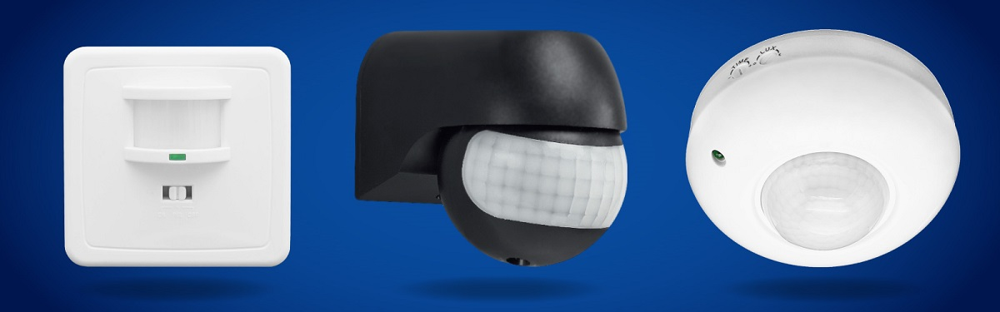

About me
Hello! I am an enthusiastic educator based in the vibrant city of Kyiv, working at the Aviation University.My academic interests revolve around teaching subjects such as
Metrology and Electrical Measurements,
Regional/Long-haul Aircraft and its Functional Systems,
Electronic Components of Avionics,
Technical Operation of Transport Means, Reliability.
Beyond the academic world, I find joy in engaging in various hands-on activities. I have a penchant for knitting and embroidery, finding solace and creativity in these artisanal pursuits.

Outside of work, I cherish quality time with my family, exploring parks and museums in our city. My two children bring boundless joy to my life, and we make it a point to discover new and interesting places together a few times each month.


In addition to my family, I share my home with a rescued cat and a few charming snails. My love for animals extends beyond my own pets, and I am genuinely passionate about their well-being.
As a perpetual learner, I strive to stay informed and continuously expand my knowledge base. Whether it's keeping up with advancements in aviation technology or delving into new areas of interest, I embrace the opportunity to learn and grow both personally and professionally.
Website Creation.
1. Used GPT chat for code generation.
2. Copied the code into MS Word. Edited it for my needs – inserted my data, changed section names.
3. Saved the document with the .html extension.
GitHub Repository Creation.
1. Registered on GitHub.
2. Accepted the invitation to join the team's shared repository via email.
3. Created a local clone of the repository. Faced initial issues – Git Desktop was not installed on the laptop, and on Windows, it stubbornly refused to install. Had to use a MacBook, where everything installed without problems. Copied the URL of the shared repository, made a local copy. In Git Desktop, added a folder with my name to this clone. Committed the changes and uploaded everything back to GitHub.
4. In my folder, added a file with the code of my website through "add file" option.
For convenience, I decided to create a table with descriptions of all the programs to make it easier to search when needed.
Pixlr
Sketchpad
Photopea
Photopea
FreeCAD
OpenSCAD
text-to-cad
AutoCad online
Motion sensor
Motion sensor is a device that utilizes infrared radiation to detect the movement of objects within its coverage area.

These sensors are used for automating security systems, lighting, climate control, and other systems indoors and outdoors. An infrared (IR) motion sensor is a device that detects motion by sensing changes in infrared radiation. It works on the principle that all objects with a temperature above absolute zero emit infrared radiation. The sensor can detect this radiation and trigger a response when there is a change in the pattern, indicating movement.
Passive Infrared (PIR) Sensors is main types of infrared motion sensors
PIR sensors are the most common type of infrared motion sensors.They detect changes in the infrared radiation levels in their field of view.
These sensors have a pyroelectric sensor that generates an electric charge when exposed to heat changes caused by motion.
PIR sensors are often used in security systems, automatic lighting, and energy-saving applications.
The basic electrical schematic of a motion sensor typically includes the following components:
Pyroelectric Sensor (PIR Sensor)
This is the main sensing element that detects changes in infrared radiation emitted by objects in its field of view.
An operational amplifier is often used to amplify the small electrical signals generated by the pyroelectric sensor.
Comparator.The amplified signal is compared to a reference voltage using a comparator. When the signal surpasses a certain threshold, it triggers further actions.
Delay Circuit.A delay circuit is commonly incorporated to prevent false positives by introducing a time delay before activating or deactivating the output.
Output Relay or Transistor. The output relay or transistor is used to switch or control external devices such as lights, alarms, or other connected systems based on the motion detection.
Power Supply. The sensor requires a power supply to operate. This could be a low-voltage DC power source.
Adjustment Controls. Some motion sensors have adjustment controls for sensitivity, duration of activation, and other parameters.
Filtering Components. Capacitors and resistors may be included for signal conditioning and noise filtering.
Microcontroller (Optional). In more advanced motion sensors, a microcontroller may be incorporated for additional features, programmability, or communication with other devices.
These components work together to create a functional motion sensor circuit. The exact configuration and additional features can vary depending on the specific type and application of the motion sensor.
Infrared motion sensors find applications in various fields due to their ability to detect movement reliably.Some common areas of use include:
Security Systems. Infrared motion sensors are extensively used in security systems for detecting intruders or unauthorized movement. They can trigger alarms, alert security personnel, or activate surveillance cameras.
Home Automation. These sensors play a crucial role in smart home automation by enabling features such as automatic lighting control, thermostat adjustments, and the activation of other smart devices based on detected motion.
Automatic Lighting Systems. Infrared motion sensors are employed in lighting systems to automatically turn lights on or off when motion is detected, enhancing energy efficiency and convenience.
Occupancy Sensing. In commercial buildings, offices, and public spaces, infrared motion sensors are used for occupancy sensing. They can control lighting and HVAC systems based on the presence or absence of people, contributing to energy savings.
Outdoor Lighting and Security. Motion sensors are utilized in outdoor lighting systems to illuminate pathways, driveways, or entrances when motion is detected. They are also integrated into outdoor security lighting.
Automatic Doors. Active infrared sensors are commonly used in automatic door systems. They emit beams of infrared light, and when these beams are interrupted by motion, the door is triggered to open.
Robotics and Automation. In industrial automation and robotics, infrared motion sensors play a role in object detection and collision avoidance.
Healthcare Monitoring.In healthcare settings, motion sensors can be used for patient monitoring, fall detection, or tracking movement within specific areas.
Gaming and Virtual Reality. In the realm of gaming and virtual reality, motion sensors are integrated into controllers and devices to track the movement of players for an immersive gaming experience.
Traffic Monitoring.In traffic management systems, infrared motion sensors are employed for vehicle and pedestrian detection at intersections, helping control traffic signals.
These applications showcase the versatility and importance of infrared motion sensors across various industries and daily life scenarios.
The infrared motion sensor operates based on the principle of detecting changes in infrared radiation within its field of view. Here is a general explanation of how it works:
Detection of Infrared Radiation. The sensor includes a pyroelectric material that responds to infrared radiation emitted by objects with a temperature above absolute zero. As objects move, the radiation patterns change.
Pyroelectric Sensor Activation. When there is motion in the sensor's detection range, the pyroelectric sensor generates a small electric charge in response to the varying infrared radiation.
Amplification of Signal. The generated electrical signal is often quite weak. Therefore, an operational amplifier (op-amp) may be used to amplify this signal, making it more suitable for further processing.
Comparison and Triggering. The amplified signal is then compared to a reference voltage using a comparator. If the signal surpasses a certain threshold, it indicates detected motion.
Output Activation. The motion detection triggers an output relay or transistor, which can activate or deactivate external devices, such as lights, alarms, or other connected systems.
Delay Circuit (Optional). Some sensors incorporate a delay circuit to prevent false positives. This introduces a time delay before activating or deactivating the output, helping to filter out transient changes.
The combination of these components allows infrared motion sensors to respond to changes in the infrared environment, making them valuable in applications ranging from security and automation to energy-efficient lighting systems.
This is my project sketch. I plan to make it with the possibility to connect to Wi-Fi. I created the sketch using AutoCAD online.
learning progress
Week1.Principles and Practices
Week2.Computer-Aided Design
Program's discription
namber
name
for what
coments
2d
1
scan2cad
enables architects and engineers to bring projects and products to life. With its software, you can easily convert scanned plans and images in conventional file types to computer-aided design (CAD) and computer-aided manufacturing (CAM) files for editing and documentation.
2
GIMP
GIMP is a cross-platform image editor available for GNU/Linux, macOS, Windows and more operating systems. It is free software, you can change its source code and distribute your changes.
3
BIMP
With BIMP you can apply a set of manipulations to an entire group of images! It provides an easy to use interface and a lot of batch functions: Resize,Crop, Flip and rotate, Blurring and sharpening,Color (and curve) correction, Watermark, Rename, Change compression and format
4
pixels
for editing digital photographs and creating raster graphics.
Creates artistic images upon request or edits uploaded files. The interface is simple, requiring no installation. Only registration through a Google account is needed.
5
Photoshop
Pixel Studio is a new tool for creating pixel art. It's simple, fast, and convenient. Pixel Studio features layers, animation, and all the necessary tools for creating cool projects. The editor is still in development, so feel free to suggest new features and leave feedback
worked there before to create postcards. A very interesting tool. has great functionality.
There is a lot of information freely available on how to work with this editor.
6
Pixlr
for editing images with a variety of photo editors and photo-sharing services.
7
MyPaint
Interesting for its good support for artists engaged in digital painting.
8
Krita
A raster graphic editor with open-source code, written in Qt, primarily developed for digital painting and animation.
9
ImageMagick
The described software is a free, cross-platform suite of programs for non-interactive (batch) processing of graphic files. It supports numerous graphic formats, released under the GPL license. It can be utilized with programming languages such as Perl, C, C++, Python, Ruby, PHP, Java, in shell scripts, or as a standalone tool.
10
GraphicsMagick
The program you're referring to has the capability to generate new images on the fly, making it suitable for creating dynamic web applications. Additionally, it can be used for tasks such as resizing, rotating, focusing, reducing color, or adding effects to images, with the ability to save the result in the same or a different image format.
Image processing operations are accessible from the command line. It offers a diverse set of tools and libraries, allowing users to read, write, and process images in over 88 popular formats (including GIF, JPEG, JPEG-2000, PNG, PDF, PNM, and TIFF, among others). Notably, it can create GIF animations from multiple images.
11
Converseen
The program you're describing is an image conversion tool that supports a wide range of graphic formats. Developers claim it covers almost all formats, and users can verify this by adding images, selecting the desired ones, choosing the input format, specifying the folder, and proceeding with the conversion.
12
Geeqie
is a free open software image viewer and organiser program for Linux, FreeBSD and other Unix-like operating systems
13
gThumb
is an image viewer and browser for the GNOME Desktop. It also includes an importer tool for transferring photos from cameras.
14
Potrace
Potrace(TM) is a tool for tracing a bitmap, which means, transforming a bitmap into a smooth, scalable image. The input is a bitmap (PBM, PGM, PPM, or BMP format), and the output is one of several vector file formats. A typical use is to create SVG or PDF files from scanned data, such as company or university logos, handwritten notes, etc. The resulting image is not "jaggy" like a bitmap, but smooth. It can then be rendered at any resolution.
15
Inkscape
It is a free vector graphics editor with capabilities similar to those of Illustrator, Freehand, CorelDraw, or Xara Xtreme
16
Adobe Illustrator
It is a leading graphic design program that helps create designs for anything imaginable, from logos and icons to graphics and illustrations.
17
Sketchpad
It is an interesting online drawing service. Creative works can be saved on your computer in formats such as png, jpeg, pdf, zip. The features of the service include:
Various brushes.
Fill with color, gradient, or patterns with adjustable transparency.
Layer work.
Ability to upload images from the computer as a separate layer.
Set of cliparts.
Adding text.
Scaling.
Export and the ability to share the created work on various social services.
A very simple image editor. you can draw different pictures on different layers. did not like it very much. weak functionality
18
Photopea
It is a creative digital tool designed for students, serving as an advanced photo and graphics editor. This free alternative to Adobe Photoshop uses both vector and raster graphics (like Illustrator drawings and Photoshop digital photos) to help you create photos, posters, graphics, images, and other visual elements in various formats, including .psd, .tiff, and .jpeg.
Works online, which is a big plus. Allows you to make changes to template images or upload your own. Convenient interface.
19
CorelDRAW
This program allows you to create professional designs with very user-friendly tools.
20
Scribus
TIt is used for creating page layouts and preparing files for printing. Scribus can also create PDF files and forms. It supports various types of text and graphic files, CMYK color scheme, and ICC color profiles.
21
QCAD
It is used for creating mechanical drawings and architectural plans.
22
FreeCAD
It is used for modeling in the fields of mechanical engineering and industrial design, but it can be utilized in a broader range of applications, including architecture.
Great functionality. It is enough to simply install. you can create objects from these shapes
3D design
23
SketchUp
It is a powerful tool for creating, editing, and viewing 3D models. SketchUp combines the elegance and simplicity of hand-drawing with the capabilities of computer-aided design.
https://lib.lntu.edu.ua/sites/default/files/2022-02/%D0%9F%D0%BE%D1%81%D1%96%D0%B1%D0%BD%D0%B8%D0%BA%20%D0%86%D0%93%20%D0%B2%20SketchUp.pdf hanbook
24
Tinkercad
A free online program for 3D modeling.
25
Shapesmith
3D-print ready, Parametric
26
Blender
A software package for creating three-dimensional computer graphics that includes tools for modeling, animation, rendering, and video post-processing.
27
Zbrush
ZBrush is a 3D modeling program developed by Pixologic. Its notable feature is the simulation of the process of 'sculpting' 3D sculptures
28
SculptGL
For sculpting.
29
Nomad
For sculpting.
30
Rhino
Rhino is utilized for creating 2D drawings, modeling intricate 3D shapes, preparing models for presentation, and production. Its popularity is attributed to the NURBS technology and the Grasshopper3D plugin, which allows for programming parametric design.
31
Solvespace
FreeCAD is a free, parametric 2D and 3D CAD software for drafting and solid modeling of both individual parts and assembled mechanisms. It provides the capability to model and analyze kinematics.
32
FreeCAD
FreeCAD is programmed in C++ and Python. The program is based on OpenCasCade, which is a powerful geometry kernel. It reads and creates many open file formats such as STEP, IGES, STL, and others. Additionally, its interface is built on Qt FreeCAD, meaning it works seamlessly on Windows, Mac OS X, and Gnu/Linux platforms.
Like many modern 3D CAD models, it has a 2D component that helps extract detailed designs from the 3D model. This allows for the creation of 2D drawings, but direct 2D design (e.g., AutoCAD LT) is not its focus, nor is animation or organic shapes (e.g., those created by Maya, 3ds Max, or Cinema 4D).
33
AutoCAD
A two- and three-dimensional computer-aided design and drafting system
I found the online version. It's very convenient to have access to projects from different places. The functionality takes some getting used to. Beginners need time to figure it out.
34
SolidWorks
3D design of products (parts and assemblies) of any complexity level, taking into account the specifics of manufacturing. Creation of design documentation. Industrial design. Design of communications (wiring, pipelines, etc.).
35
ONSHAPE
ONSHAPE Standard is a full-featured 3D CAD system serving as a cloud service. It provides the ability to access files from any device anywhere in the world.
Key features of ONSHAPE Standard:Full-featured 3D CAD; Version control; Document exchange among project participants; Simultaneous real-time collaboration on the project by all participants.
36
MagicaVoxel
To create voxel graphics, a well-known and widely used tool is employed. Its simple user interface and set of tools make it popular among artists and game designers
37
OpenSCAD
This is free software for creating 3D models using scripts. One distinctive feature of OpenSCAD is that when creating a 3D model with this software, objects are not formed through transformations but rather through logical operations that alter their appearance.
Uses program code to create objects. This is very inconvenient for untrained users. It takes a lot of time to understand the commands and construction principles. for example, the construction of a trapezoid consists of several stages. Construction of the base and individual faces.
38
nTopology
is typically used in conjunction with other computer-aided design (CAD) and computer-aided engineering (CAE) software during the development of highly-optimized products in the aerospace, automotive, medical devices, and consumer products industries among others.
39
GrabCAD
An application for 3D printing.
interchange formats
40
DXF
The open file format for exchanging graphic information between CAD applications is the Drawing Exchange Format (DXF)
41
STL
The file format widely used for storing three-dimensional models of objects for use in additive technologies is the STL (Stereolithography) file format
42
OBJ
The file format for describing geometry was developed by Wavefront Technologies for their Advanced Visualizer animation package.
43
FBX
The technology and file format were developed by Kaydara and are currently owned and continued to be developed by Autodesk. It is used to ensure compatibility between various 3D graphics programs.
44
IGES
An IGES drawing file stores vector image data for exchanging 2D and 3D information across various CAD programs. Manufacturers and designers use CAD programs to streamline planning and pricing processes, as well as to specify details of construction and design projects. IGES files have the extension .IGS and can store various types of schematic plan information, including layouts, volumetric models, and assembly diagrams.
IGES stands for 'Initial Graphics Exchange Specification' and is a standard that stores information in ASCII format.
45
STEP
STEP stands for 'Standard for the Exchange of Product Data,' also known as ISO 10303. This widely-used file format is employed for 3D modeling and printing and serves as the ISO standard for data exchange. This means that STEP files can handle and store all the information of a 3D model, not just the basic geometry, ensuring a high level of accuracy.
All 3D model data is stored as text, making it recognizable by various CAD systems. STEP is a standardized format, making it easy to create, distribute, and edit 3D models using different programs and software.
STEP files go by several names, including:
• ISO 10303 • STP file • P21 file • Physical STEP file
46
GLTF
This defines an extensible common publishing format for tools and services related to 3D content, optimizing development workflows and ensuring functional interoperability for the use of content within the industry.
47
Alembic
This is a file format for highly efficient storage of geometry and other scene information, which can now be directly loaded into Maxwell Render 3. Alembic support includes static and animated geometry, as well as particles, enhancing the speed and efficiency of your workflow.
48
USD
This is a three-dimensional (3D) format for describing computer graphics scenes. USD files contain data about 3D graphical elements, including the scene layout
VR/AR
49
SculptrVR
Create sprawling, brilliant worlds and explore them with your friends! Invite your friends to an online game, then race to the finish with hang-gliders, or switch to climbing mode for even more fun.
50
Gravity Sketch
A unique game transforming virtual reality into a tool for 3D modeling and drawing. This application allows you to create volumetric works of art, design, and modeling directly in the virtual reality space. Forget about conventional boundaries and limitations of classical design – with Gravity Sketch, you can experience the freedom and flexibility in bringing your ideas to life.
Incredible features of Gravity Sketch:
1. Intuitive Interface: Easy and convenient to learn, regardless of your experience in 3D design.
2. Powerful Tools: Brushes, shapes, primitives, and more for creating complex and detailed compositions.
3. Layer Work: Organize your creativity and edit individual layers to create the perfect project.
4. Collaboration: The ability to collaborate on projects with other users and exchange ideas.
5. Export and Import: Save your creations and import them into other programs for additional detailing and editing.
51
Kodon
Kodon is a product by TenkLabs AS, born and raised in Norway. With Kodon we have developed an industry changing sculpting software in VR, that allows artists to create 3D models in a true 3D environment.
Over the past 4 years our developers have worked night and day creating a unique hybrid solution. We want to allow artists to switch between VR and the traditional tablet and pen, but also between voxels, poly modeling and surface sculpting within the same program. We aim to deliver an optimal workflow with increased speed, performance and creative freedom that can fit seamlessly into any production pipeline.
Our goal is to become an industry leading solution for asset creation within the professional realm of 3D design
52
Tilt Brush
Allows drawing in three-dimensional space. Simply choose a color and brushes and start moving your hand smoothly. Before you is a blank canvas, and you can navigate, enter inside, and pass through your drawings. As it's all in virtual reality, you can even choose seemingly impossible materials for creativity, such as fire, stars, or snowflakes.
simulation
53
Blender Physics video
Blender's physics system enables the simulation of various real-world physical phenomena, allowing users to create a range of static and dynamic effects such as:
• Hair, grass, and crowds • Rain • Smoke and dust • Water • Cloth • Jelly • And more.
54
FreeCAD CalculiX
The solver is able to do linear and non-linear calculations, for static, dynamic, and thermal problems. The solver operates on an Abaqus input file (.inp), which means it can be used with different pre-processors that support this format. The program includes its own graphical preprocessor which, however, is not used by FreeCAD, only the solver itself.
55
Abaqus
Abacus is a software package for finite element analysis and computer-aided design. The name and logo of this software are based on the abacus computational tool. The Abaqus package consists of five main software products, namely:
1. Abaqus/CAE, or "Complete Abaqus Environment" – a software application used for modeling and analyzing mechanical components and assemblies (with preprocessing) and visualizing finite element analysis results. A subset of Abaqus/CAE includes only the post-processing module, which can be launched independently in a product such as Abaqus/Viewer.
2. Abaqus/Standard – a general-purpose finite element analysis solver that uses an implicit integration scheme (traditional approach).
3. Abaqus/Explicit – a special-purpose finite element analysis solver that uses an explicit integration scheme to solve nonlinear systems with complex transient loads.
4. Abaqus/CFD – computational fluid dynamics software that provides advanced computational hydrodynamics with extensive preprocessing support presented in Abaqus/CAE.
5. Abaqus/Electromagnetic – a computational electromagnetics software application that solves electromagnetic computational problems.
Abaqus products use the open-source Python programming language for various scripts. Additionally, Abaqus/CAE utilizes a cross-platform toolkit for developing the graphical user interface
56
Elmer
This is a computational tool for multiphysics tasks. It was developed by the company CSC in collaboration with Finnish universities, research laboratories, and industry. Elmer FEM Solver is free and open-source software that complies with the requirements of the GNU General Public License (GPL), version 2 or later.
Elmer includes, for example, physical models for fluid dynamics, structural mechanics, electromagnetics, heat transfer, and acoustics. These are described by partial differential equations that Elmer solves using the finite element method (FEM).
57
COMSOL Multiphysics
This software is for finite element analysis, solving, and simulation for various physical and engineering applications, especially for coupled phenomena or multiphysics.
58
ANSYS
Software created by ANSYS, Inc. This package allows solving a wide range of problems in the areas of strength, heat, hydrodynamics, electromagnetism, as well as interdisciplinary analysis, combining all four areas. It enables structural optimization based on various types of analysis.
59
NASTRAN
This is finite element analysis software that was initially developed for NASA in the late 1960s under U.S. government funding for the aerospace industry. The MacNeal-Schwendler Corporation (MSC) was one of the main and early developers of the publicly available NASTRAN code. Its source code is embedded in various software packages used in many companies
60
Open Dynamics Engine (ODE)
This is finite element analysis software that was initially developed for NASA in the late 1960s under U.S. government funding for the aerospace industry. The MacNeal-Schwendler Corporation (MSC) was one of the main and early developers of the publicly available NASTRAN code. Its source code is embedded in various software packages used in many companies
60
Open Dynamics Engine (ODE)
This is finite element analysis software that was initially developed for NASA in the late 1960s under U.S. government funding for the aerospace industry. The MacNeal-Schwendler Corporation (MSC) was one of the main and early developers of the publicly available NASTRAN code. Its source code is embedded in various software packages used in many companies
61
Modelica
Free and open-source software for modeling, simulation, optimization, and analysis of complex dynamic systems. It is based on the Modelica language and includes blocks for mechanics, electronics, motors, hydraulics, thermodynamics, control elements, and more. In terms of capabilities, it approaches computational environments such as Matlab Simulink and Scilab xCos, while providing a significantly more user-friendly representation of the system equations of the investigated block. It does not require substantial transformation or reduction to the Cauchy form, allowing users to simply specify initial conditions and write equations in velocities.
Be sure to explore more. I use simulink in the educational process.
audio, video
62
Audacity
Considered one of the simplest and most convenient audio editors, with which you can cut and join tracks, mix audio tracks, record sound, remove noise, and adjust volume levels
63
Qsynth
Qsynth is a fluidsynth GUI front-end application written in C++ around the Qt framework using Qt Designer. Eventually it may evolve into a softsynth management application allowing the user to control and manage a variety of command line softsynth but for the moment it wraps the excellent FluidSynth. FluidSynth is a command line software synthesiser based on the Soundfont specification.
64
MuseScore
This is a WYSIWYG editor with the ability to quickly input notes using both the computer keyboard and an external MIDI keyboard. It supports the editing of video recordings in DV, HDV, and AVCHD formats. Import and export of data in MIDI and MusicXML formats are supported, as well as the import of Band-in-a-Box application files. Additionally, the program can export scores to PDF, SVG, and PNG files, or to LilyPond documents for further detailed score refinement. Musescore tests and improves the capability to input information into the editor from graphic files in PNG, JPG, and PDF formats. This processing is carried out on the official website and downloaded to the user's computer in the form of approximate scores.
The program features an alternative interface for editing documents called the Inspector. It is a dialog with a document tree where various values can be changed by entering numbers or selecting the necessary parameters.
A template system is implemented, allowing the saving and loading of score formatting styles. There is a convenient manual insertion of line and page breaks.
For score playback, either the FluidSynth synthesizer is used, which loads an embedded SF2 format sample, or any external synthesizer (via ALSA and/or JACK).
The program's interface is translated into about 30 languages, including partial translation into Ukrainian
65
Kdenlive
Free, open-source software for non-linear video editing. Supports editing video footage in DV, HDV, and AVCHD formats.
66
DaVinci Resolve
For editing and color correction, applying visual effects, creating graphics, and post-processing audio within a unified software environment.
67
OBS Studio
Free and open source software for video recording and live streaming.
Download and start streaming quickly and easily on Windows, Mac or Linux.
68
impleScreenRecorder
is a Linux program that I've created to record programs and games. There were already a few programs that could do this, but I wasn't 100% happy with any of them, so I created my own.
My original goal was to create a program that was just really simple to use, but as I was writing it I started adding more and more features, and the result is actually a pretty powerful program. It's 'simple' in the sense that it's easier to use than ffmpeg/avconv or VLC, because it has a straightforward user interface.
AI
69
Midjourney
is an independent research lab exploring new mediums of thought and expanding the imaginative powers of the human species.
We are a small self-funded team focused on design, human infrastructure, and AI. We have 11 full-time staff and an incredible set of advisors.
70
Dall-E
We’ve trained a neural network called DALL·E that creates images from text captions for a wide range of concepts expressible in natural language.
71
Stable Diffusion
creates images from text
72
Dream Fields
Dream Fields” is a huge collection of playable pads and atmospheres focused on fractured, lonesome glitches, nostalgic, organic moods, field recordings and subtle ASMR-like noisescapes.
It's a world of small noises and distant radio signals in a lush and breathy tonal fog, in between nature and technology.
All sounds have a different LFO pulse programmed on the Mod Wheel, and six effects to trigger on the fly (from F6 to A#6, Lo-Fi, Skreamer, Distortion, Saturation, Jump, Chorus).
73
Dreamfusion
One of the main challenges in creating a diffusion model that directly generates 3D assets is that there simply isn't as much available 3D data. 2D diffusion models have become powerful due to the vast dataset of images found on the internet. This cannot be said for 3D assets. Some 3D generative methods overcome this data scarcity by leveraging a large amount of 2D data
74
Magic3D
Generates a 3D mesh model with a colored texture within 40 minutes. This happens immediately after the company inputs a prompt like 'A blue poisonous frog sitting on a water lily.' The resulting enhanced output can be used in artistic CGI scenes or video games.
75
text-to-cad
Transforms text into a 3D model.
It's very useful for creating a model, especially if you don't have graphic skills.
Final project